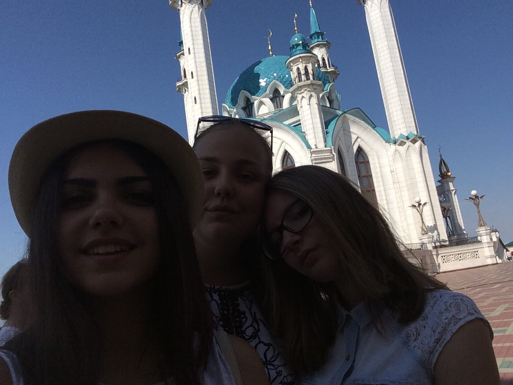

Kazan Kremlin
The Kremlin complex on Millennium Square is the first thing worth visiting in Kazan if you are visiting the city for the first time. The complex includes such iconic historical sights as the Syuyumbike Tower, the Governor's Palace, the Annunciation Cathedral, the Transfiguration Monastery, the Palace (Vvedenskaya) Church, the Presidential Palace, the mausoleum of the Kazan khans and many other buildings of bygone eras. Fragments of a stone pylon in Kazan date back to the pre-Mongol period and keep the most ancient history of the Kremlin.
On the territory of the Kremlin there are also several museum and exhibition expositions telling about the history and formation of religion in the city, including the Hermitage-Kazan Center, the Natural History Museum of Tatarstan, the Museum of the History of Tatarstan Statehood, the Manezh Exhibition Hall, the Weapon Museum. Spirit of War ”, Museum of Islamic Culture and Museum of the History of the Annunciation Cathedral.